Oracle数据库技术
Oracle是甲骨文公司的软件产品，是全球最优秀的数据库产品。
Oracle版本介绍
Oracle 9i
Oracle 9i（其中“i”代表Internet），包括3部分。
- Oracle 9i数据库。又分为企业版、标准版和个人版。
- Oracle 9i应用服务器。有两种版本：企业版主要用于构建互联网应用，面向企业级应用；标准版用于建立面向部门级的Web应用。
- Oracle 9i开发工具套件。它是一整套的Oracle 9i应用程序开发工具。
Oracle 10g
Oracle 10g（其中“g”代表grid网格），是网格计算的意思，网格计算是Oracle 10g的主要技术之一。
Oracle 11g
2007年7月12日，甲骨文公司在美国纽约宣布推出数据库Oracle 11g，这是Oracle数据库的最新版本。
Oracle企业管理器
Oracle企业管理器通过一种独特的应用软件到磁盘的系统管理方法，使客户能够降低应用环境的复杂性并提高效率。
Oracle 10g及以后版本的企业管理器的使用方法和以前的版本有所不同，以前版本的企业管理器类似于SQL Server中的企业管理器，是可视化的树形管理方式，而Oracle 10g等较新版本的数据库系统含有的企业管理器采用的是基于Web的数据库管理工具，它通过在客户端的浏览器中访问OEM控制台来实现管理功能。
Oracle企业管理器（OEM）是管理Oracle数据库的主要工具，它随着Oracle 11g数据库系统一起被安装。
Oracle SQL Developer
Oracle SQL Developer是一个图形化的数据库开发工具。使用SQL Developer，可以浏览数据库对象、运行SQL语句和SQL脚本，并且还可以编辑和调试PL/SQL语句。还可以运行所提供的任何数量的报表，以及创建和保存自己的报表。SQL Developer可以提高工作效率并简化数据库开发任务。
安装Oracle 11g数据库服务器就含有SQL Developer，但SQL Developer也可以单独免费下载。
SQLPlus
SQL Plus是Oracle数据库服务器最主要的接口，它提供了一个功能强大且易于使用的查询、定义和控制数据的环境。
命名规则和数据类型
命名规则
标准命名方式
- 命名以字符打头
- 除数据库名称长度为1~8个字符外，其余为30个字符以内
- 对象名中只能包含a-z、A-Z0-9、_、$和#
- 不能和同一个用户下的其他对象重名
- 不能以Oracle服务器的保留字命名
非标准命名
非标准命名方式可以使用任何字符，包括中文、Oracle中的保留字和空格等，但是需要将对象名用双引号括起来。例如：Create Table “Table”(Test1 Varchar2(10));
该命令建立一个表名为Table的表，没有语法错误。但这样命名就需要以后在使用该对象时必须用双引号将对象括起来。例如，select From Table;是错误的，应该用select From “Table”;。
数据类型
Oracle数据库的数据类型可分为4类：字符数据类型、数字数据类型、日期数据类型和其他数据类型。
字符数据类型
| 数据类型 | 说明 | 域取值 |
|---|---|---|
| Char | 定长字符串 | [0，2000b] |
| Varchar2 | 变长字符串 | [0，4000b] |
| Nchar | 根据字符集而定的定长字符串 | [0，2000b] |
| Nvarchar2 | 根据字符集而定的变长字符串 | [0，4000b] |
| Long | 超长字符串 | [0，2gb] |
| Clob | 字符数据 | [0，4gb] |
| Nclob | 根据字符集而定的字符数据 | [0，4gb] |
数字数据类型
| 数据类型 | 说明 | 域取值 |
|---|---|---|
| Number | 格式为number(P,S)，P为整数位，s为小数位 | P Default 38，S∈[-84，127] |
| Binary_Float | 32位的双精度浮点型数值 | [1.17549E-38F，3.40282E+38F] |
| Binary_Double | 64位的双精度浮点型数值 | … |
日期数据类型
| 数据类型 | 说明 | 域取值 |
|---|---|---|
| DATE | 有效的日期类型 | 从January 1，4712 BC到December31,9999 AD |
| TIMESTAMP（fractional_seconds_precision） | 时间戳类型（含秒的精度位数） | 秒的精度位数为0~9（默认为6） |
| TIMESTAMP（fractional_seconds_precision）WITH{LOCAL}TIMEZONE | 带{局部}时区的时间戳类型（含秒的精度位数） | 秒的精度位数为0~9（默认为6） |
其他数据类型
| 数据类型 | 说明 | 域取值 |
|---|---|---|
| Raw | 定长的二进制数据 | [0，2000b] |
| Long Raw | 变长的二进制数据 | [0，2gb] |
| Rowid | 数据表中记录的唯一行号 | 10b |
| Blob | 二进制数据 | [0，4gb] |
| Bfile | 存放在数据库外的二进制数据 | [0，4gb] |
| Urowid | 二进制数据表中记录的唯一行号 | [0，4000b] |
Oracle安装
Oracle Database 11g安装
可从官网选择合适版本的Oracle下载（需要注册），得到两个压缩文件。先解压到同一个目录，运行setup.exe。
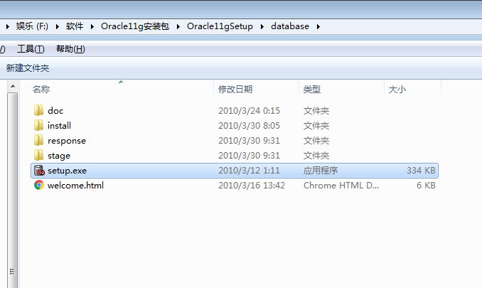
配置安全更新，可以输入自己的电子邮箱，然后单击下一步。
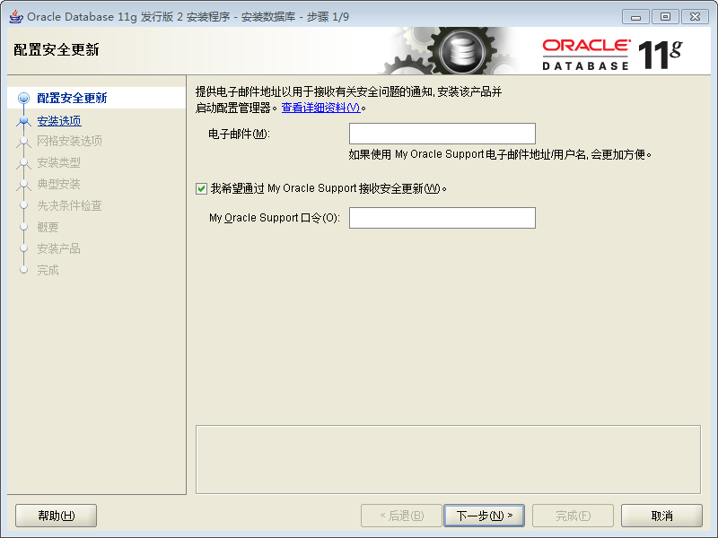
选择安装选项。首次安装一般选“创建和配置数据库”，单击下一步。
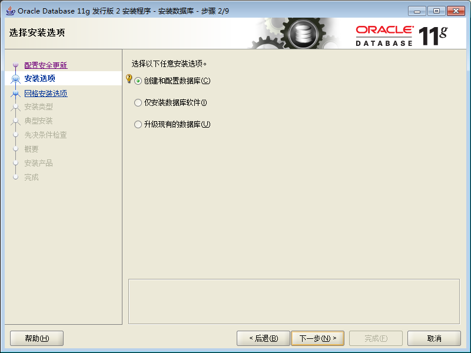
选择系统类。一般学习或应用开发时选“桌面类”。点击下一步。（桌面类适用于台式机和笔记本，只包含最小数据库和最低配置要求，不允许远程访问。服务器类提供数据库服务，可用于企业级应用）
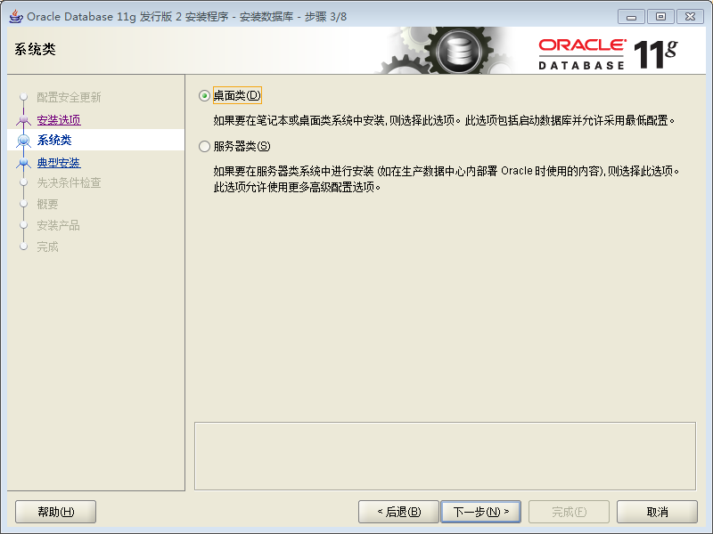
典型安装配置。全局数据库名和管理口令一定要记录下来。管理口令是指对sys、system、dbsnmp等系统管理类账号通用的初始口令。设置好后单击下一步。
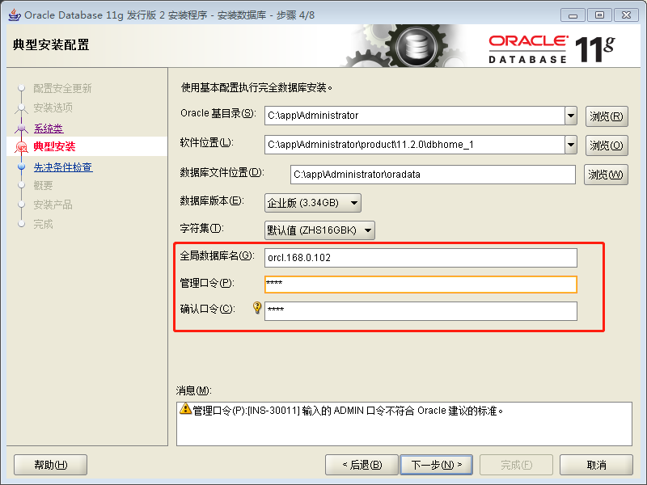
先决条件检查通过后，显式安装概要。点击完成。
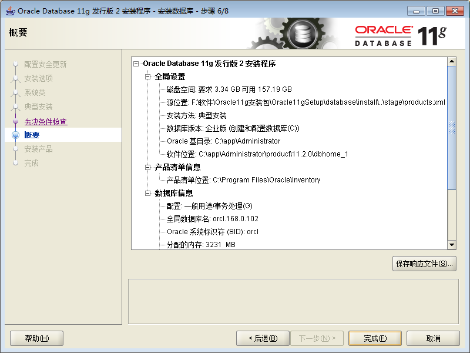
开始安装，然后就是漫长的等待。
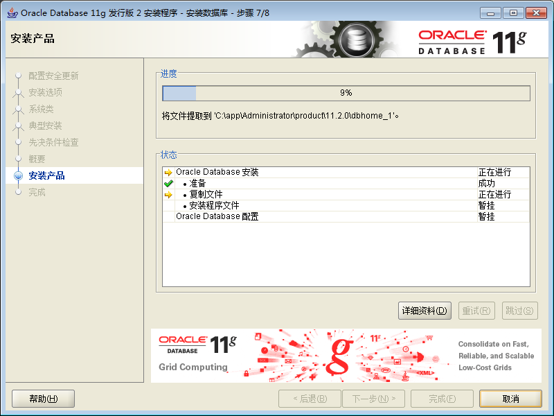
安装完成后，出现安装完成的信息框。点击关闭按钮就可以开始使用Oracle数据库了。
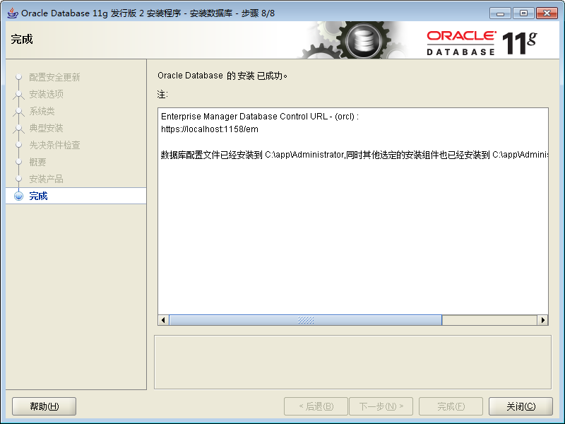
注意：
- 运行打开services.msc，至少要启动数据库服务和数据库监听后，才能进行Oracle 11g的基本操作。
- 只有启动OracleDBConsoleorcl服务，才能以Web方式在IE浏览器中实现数据库的全面管理。
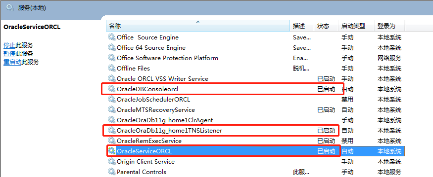
常用Oracle系统服务
在应用软件开发层面对Oracle数据库的使用中，至少用到上述系统服务中的两项：OracleServiceORCL和OracleOraDb11g_home1TNSListener。下面介绍常用的Oracle系统服务。
注意：
- SID是数据库标识，这里为ORCL
- HOME_NAME是Oracle Home的名称，这里为OraDb11g_home1。
OracleServiceSID（数据库服务）
数据库服务的功能是启动和停止数据库。服务名中的“ORCL”是在数据库安装过程中指定的数据库系统标识（SID）。服务进程为ORACLE.EXE。参数文件为initSID.ora，日志文件为SIDALRT.log，控制台为SVRMGRL.EXE和SQLPLUS.EXE。
OracleHOME_NAMETNSListener（监听器服务）
在远程访问数据库时，监听器程序负责接受和处理对数据库的远程访问请求，并发送处理结果给请求客户端。如果是直接访问本地数据库，则不需要此监听器服务程序。服务进程为TNSLSNR.EXE，参数文件为Listener.ora，日志文件为listener.log，控制台为LSNRCTL.EXE，默认端口为1521和1526。
OracleHOME_NAMEAgent（OEM代理服务）
OEM代理服务，接收和响应来自OEM控制台的任务和事件请求，只有使用OEM管理数据库时才需要。服务进程为DBSNMP.EXE，参数文件为snmp_rw.ora，日志文件为nmi.log，控制台为LSNRCTL.EXE，默认端口为1748。
OracleHOME_NAMEHTTPServer（Web服务器）
Oracle提供的Web服务器，服务进程为APACHE.EXE，参数文件为httpd.conf，默认端口为80。
OracleHOME_NAMEManagementServer（OEM管理服务）
使用OEM时需要OEM管理服务，服务进程为OMSNTSVR.EXE，日志文件为oms.nohup。
Oracle配置管理工具
Oracle常用的配置管理工具有：
- Administration Assistant for Windows
- Database Configuration Assistant（数据库配置助手）
- Net Configuration Assistant（网络配置助手）
- Oracle Net Manager（网络管理器）
Net Configuration Assistant配置
网络配置助手主要为用户提供Oracle数据库的监听程序配置、命名方法配置、本地NET服务名配置和目录使用配置。网络配置助手以向导的形式出现，使配置过程更加简单。
监听程序配置
监听器是Oracle基于服务器端的一种网络服务。监听器创建在数据库服务器上，主要作用是监视客户端的连接请求，并将请求转发给服务器。Oracle监听器总是存在于数据库服务器端，因此在客户端创建监听器毫无意义。
第一步，在Oracle安装后的程序组“配置和移植工具”中单击“Net Configuration Assistant”，出现欢迎界面。选择监听程序配置，下一步。
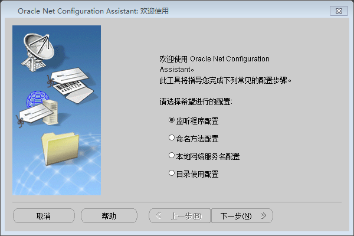
选择添加，下一步。
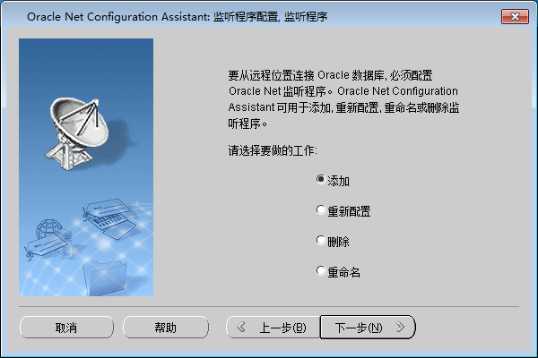
指定监听程序名，下一步。
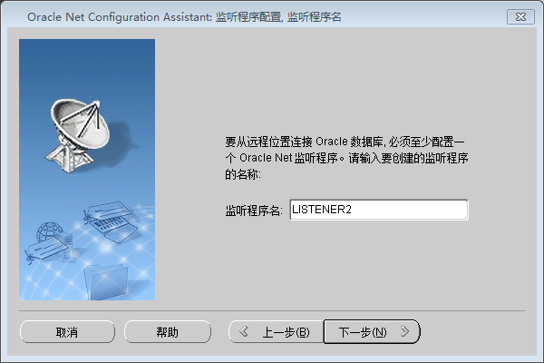
指定监听程序的协议，下一步。
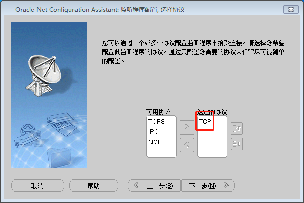
指定监听程序使用的TCP/IP端口，下一步。
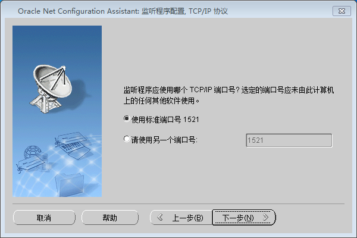
是否配置另一个监听程序，选否，下一步。
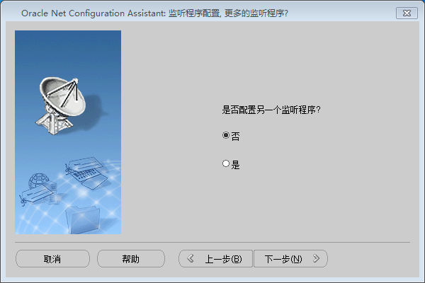
配置完成！
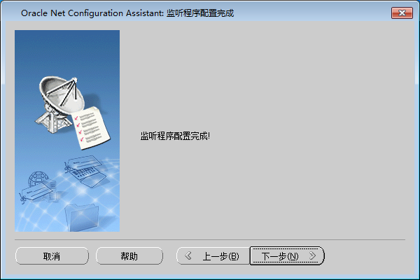
打开服务，可以看到配置后新添加的服务。
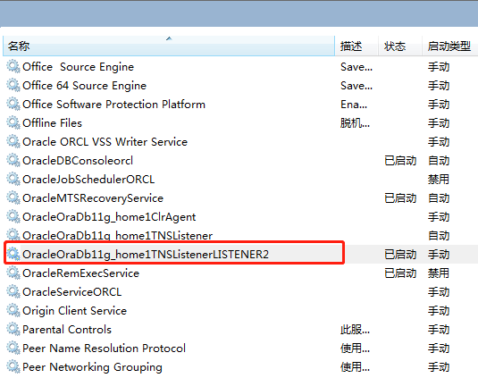